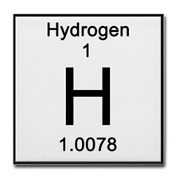
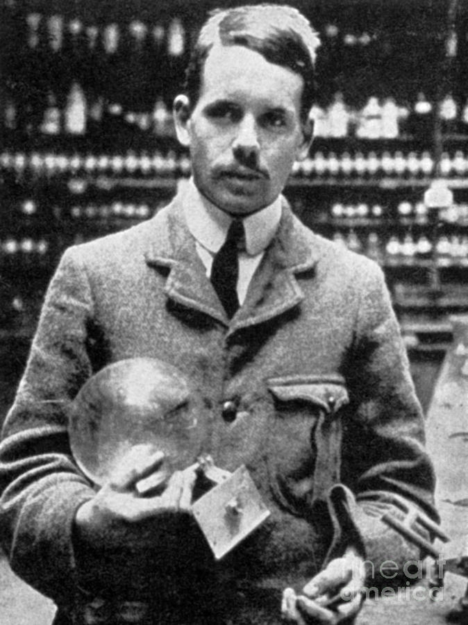

The Periodic Table
The Periodic Table of Elements is a table showing all the elements discovered in the world. An element is a pure substance that cannot be broken down into anything smaller.Theoretically, it can be broken down into smaller praticles, it is just that they cannot be identified as the same element anymore. It can be broken down into electrons, neutrons, protons, even into quarks and leptons, but thats a lesson for another website.
Dmitri Mendeleev
Who created the Periodic Table of Elements? It must have taken a long time. Dmitri Mendeleev was the one who started the process. He was a Russian chemist who lived from 1834 to 1907. He wondered that the elements must have some way of organizing them. He classified all the discovered elements by their density, melting and boiling points, their atomic mass, etc. He finally found a pattern through the atomic mass and also the valence electrons and classified them like that. Mendeleev gave a presentation on his theories in March 1869. Some of the prominent things in his presentation were:
Was Mendeleev correct? Not necessarily. He made amazing advances in chemistry for his time, but didn't have all the details correct. He predicted that tellurium's atomic mass would be between 123 and 126. This wwas incorrect as tellurium has an atomic mass of 127.6 But Mendeleev managed to come up with elements that weren't discovered yet and came up with startlingly close properties to the actual ones. He came up with these elements through observations of a periodic pattern within the elements. He pretty much made an educated guess. If you have heard an element called "eka-" followed by another element's name. For example, the newly discovered element 118 or Ununoctium, is sometimes called eka-radon. Mendeleev came up with this. His new elements were eka-silicon,eka-aluminum, and eka-boron. These elements would be germanium, gallium, and scandium, respectively. Eka is a prefix to show how far down in the group is an element compared to the element with the "eka" prefix. Ununoctium is one space down from Radon, so it is called eka-radon. Rhenium is also called dvi-manganese. Eka, dvi, and tri mean one, two, and three respectively. These names are meant to be used when predicting an element, before it is actually discovered. Instead of saying "Let's discover that element!" and be vague about which element you are talking about, you can say "Let's discover eka-francium!" Mendeleev is a known for other discoveries, but the periodic table is the most famous one.
Generally, discover is a vague term as the scientists "hack" their way to find the new elements. Check out the "Elements" section for more details.
The Modern Periodic Table
The periodic table isn't, however, sorted by atomic mass like Mendeleev thought. If you look closely, the atomic mass might increment up, but sometimes it might go down. Instead, the periodic table is based off of atomic number, or the number of protons in atom. Mendeleev, however, didn't come up with this. It was done by an English physicist by the name of Henry Moseley.
Henry Moseley
If Moseley arranged the periodic table by atomic numbers, how did he do it while Mendeleev couldn't? Moseley was already an accomplished physician and made the first atomic battery while experimenting with the energy of β-particles. The law now known as Moseley's law is the systematic mathematical relationship between the wavelengths of the X-Rays produced and the atomic numbers of the metals used in the X-Ray test tubes. Using Bragg's defraction law, he was able to identify the X-Ray wavelengths. Using this he noticed that cobalt has a slightly larger atomic mass compared to nickel, although Mendeleev assigned them the mass of 27 and 28, respectively. Also, Moseley showed there were gaps in the periodic table, at elements 43,61, 72, and 75, or technectium, promethium, hafnium, and rhenium, respectively. The elements hafium and rhenium were discovered about a decade later in 1923-25, with Moseley experimenting with the X-Rays around 1913. Between elements 13 and 79, or aluminum through gold, Moseley was able to prove that no other elements were missing. Moseley also showed that the standing question between chemists about the "missing" elements could be finally answered. He came up with a family of rare earth metals, with exactly 15 in this group. Moseley was able to predict these elements, a feat many chemists had tried to do and failed. He proved that element 61 exists, something many chemists were skeptical about. A few years later, element 61, or promethium, was created artificiialy from nuclear reactors. Unfortunately, Moseley died at 27 years old on April 1915. He joined the Royal Engineers of the British Army during World War 1. During a battle at Turkey, he was a telecommunications officer and was shot and killed.